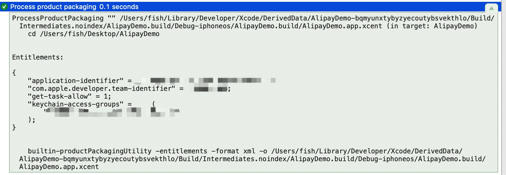
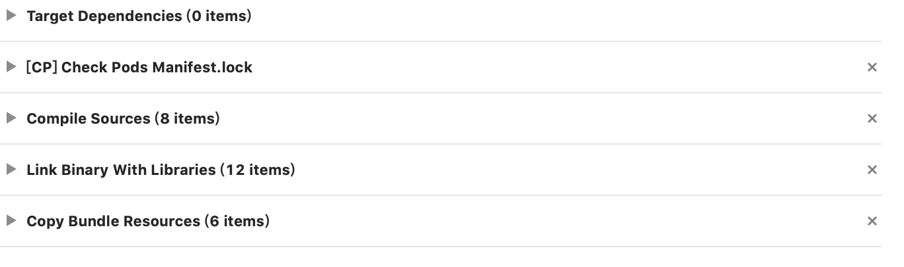
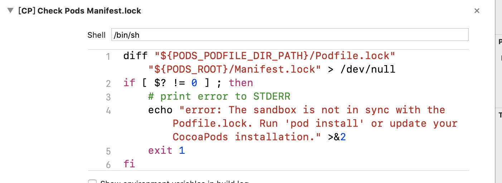
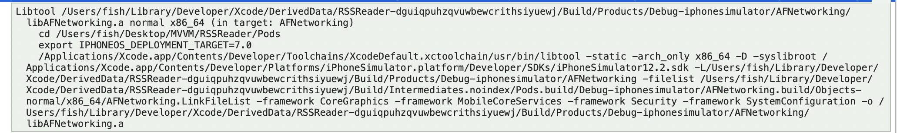
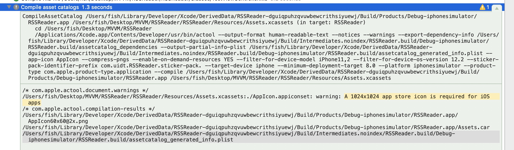
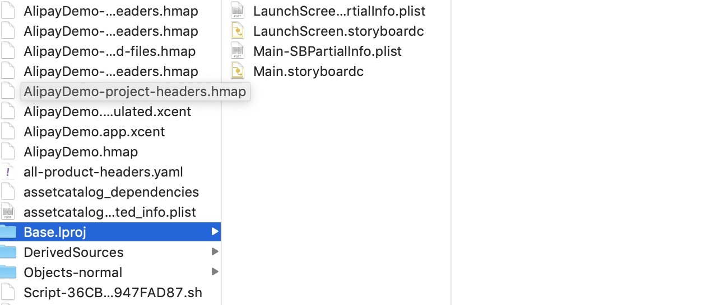
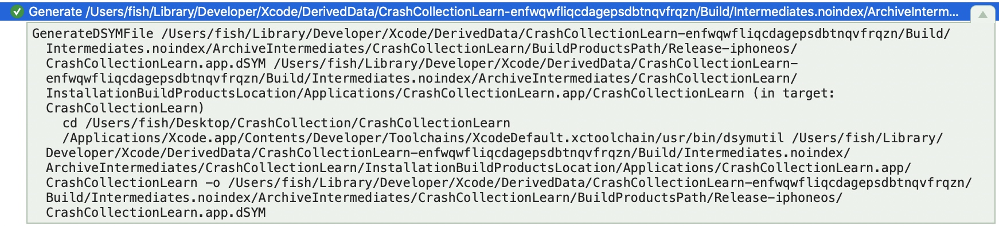

ARC的实现
苹果官方说明中称，ARC是由编译器进行内存管理，但实际上只有编译器是无法完全胜任的，还需要Object-C运行时库的协助
__strong修饰符实现
赋值给__strong修饰符在程序中实际运行
{
id __strong obj = [[NSObject alloc] init]
}
//编译器的模拟代码
id obj = objc_msgSend(NSObject, @selector(alloc))
objc_msgSend(obj, @selector(init))
objc_release(obj)
编译器在变量超出作用域时 自动插入了release方法
调用alloc/new/copy/mutableCopy以外开头的方法，
+(id) array {
return [[NSMUtableArray alloc] init]
}
//编译器的模拟代码
+ (id)array {
id obj = objc_msgSend(NSMutableArray, @selector(alloc))
objc_msgSend(obj, @selector(init))
return objc_autoreleaseReturnValue(obj)
}
{
id __strong obj = [NSMutableArray array];
}
//编译器的模拟代码
id obj = objc_msgSend(NSMutableArray, @selector(array))
objc_retainAutoreleasedReturnValue(obj)
objc_release(obj)
objc_retainAutoreleasedReturnValue()和objc_autoreleaseReturnValue()是成对存在的，用于最优化程序运行
objc_autoreleaseReturnValue与objc_autorelease函数不同，其功能不仅仅是指注册对象到autoreleasepool中，而是会检查使用该函数的方法或函数调用方的执行命令列表，如果调用方在调用了该函数时接着调用了objc_retainAutoreleaseReturnValue()函数，那么就不将函数注册到autoreleasepool中，而是直接传递到方法或函数的调用方。
objc_retainAutoreleasedReturnValue函数与objc_retain函数不通过，即使不注册到autoreleasepool中而返回对象也能正确获取函数
__weak修饰符
{
id __weak obj1 = obj;
}
//模拟源代码
id obj1；
objc_initWeak(&obj1, obj)
objc_destroyWeak(&obj1)
initWeak初始化附有__weak修饰符的变量，其等效于
objc_initWeak(&obj1, obj)
//等效于 将__weak修饰符变量初始化为0后，调用storeWeak
obj1 = 0
objc_storeWeak(&obj1, obj)
objc_destroryWeak 函数 释放该变量 等效于
objc_destroyWeak(&obj1)
//等效于
objc_storeWeak(&obj1, 0)
objc_storeWeak()函数 将第二参数的赋值对象的地址作为键值，将第一参数附有__weak修饰符的变量地址注册到weak表中。如果第二参数为0 则将变量的地址从weak表中删除
weak表与引用计数表相同 作为hash表(散列表)实现。由于一个对象可以同时赋值给多个附有__weak修饰符的变量，因此将废弃地址的键值进行搜索就能高速获取所有对应的__weak修饰变量的地址
1. 若附有__weak修饰符的变量所引用的对象被废弃，则将nil赋值给该变量
当废弃没人持有的对象时，对象通过objc_release函数释放，流程
- objc_release
- 引用计数为0所以执行dealloc
- _objc_rootDealloc
- objc_dispose
- objc_destructInstance
- objc_clear_deallocating
其中objc_clear_deallocating函数的动作如下:
- 从表中获取废弃对象的地址为键值的记录
- 将包含在记录中的所有附有__weak修饰符变量的地址，赋值为nil
- 从weak表中删除该记录
- 从引用计数表中删除废弃对象的地址为键值的记录
此时，当附有__weak修饰符引用的独享被废弃时，该变量会被自动置空为nil
注意
由上面步骤可知，当大量使用附有 __weak修饰符的变量时，会消耗相应的cpu资源。因此尽量在只需要避免循环引用时使用 __weak修饰符
2. 使用附有__weak修饰符变量，即是访问注册到autoreleasepool中的对象
{
id __weak obj1 = obj;
NSLog(@“%@”， obj1)
}
//模拟代码
id obj1;
objc_initWeak(&obj1, obj)
id tmp = objc_loadWeakRetained(&obj1)
objc_autorelease(tmp)
NSLog(@"%@", tmp)
objc_destroyWeak(&obj1)
在使用__weak修饰符的变量时，增加了
objc_loadWeakRetained函数 取出__weak修饰的变量并且retainobjc_autorelease函数将对象注册到autoreleasepool中
因此在使用__weak修饰的变量所引用的对象，被注册到autorelasepool中，在@autorelase结束之前都可以放心使用
注意
当 大量使用 weak修饰修饰的对象时，就会大量注册到autorelasepool中对象，因此在使用__weak修饰符修饰的对象时，尽量先赋值给 __strong修饰符的对象再使用，这样就只注册到autoreleasepool中一次
3. 特殊的不能使用__weak的情况
- NSMachPort类不支持__weak修饰符 这些类重写了retain/relesase并且实现独自的引用计数
- 不支持__weak修饰符的类，其类声明中 附加了
__attribute__((objc_arc_weak_reference_unavailabel)) - 类自己实现了
allocsWeakReference方法返回NO 则不能使用__weak修饰符 - 类自己实现
retainWeakReference方法 返回NO 则该变量为nil
__autoreleasing修饰符
将对象赋值给附有__autoreleasing修饰符 相当于ARC无效时调用对象的autorelase方法
@autoreleasepool{
id __autorelasing obj = [[NSObject alloc] init]
}
//模拟源代码
id pool = objc_autoreleasePoolPush()
id obj = objc_msgSend(NSObject, @selector(alloc))
objc_msgSend(obj, @selector(init))
objc_autorelase(obj)
objc_autoreleasepoolPop(pool)
调用alloc/new/copy/mutableCopy之外的方法
@autorelasepool{
id __autoreleasing obj = [NSMutableArray array]
}
//编译器的模拟代码
id pool = objc_autoreleasePoolPush()
id obj = objc_msgSend(NSMutableArray, @selector(array))
objc_retainAutoreleaseReturnValue(obj)
objc_autorelase(objc)
objc_autoreleasepoolPop(pool)
RunLoop使用示例
1.将定时器添加到NSRunLoopCommonModes中，避免在UITrackingRunLoopMode无法执行
滑动ScrollView后系统把RunLoop切换为UITrackingRunLoopMode,因此加载默认模式中的定时器并不会执行,只有滚动停止回到默认模式才会继续执行。我们可以把定时器设为 NSRunLoopCommonModes的模式，并添加到 run loop 中；
[[NSRunLoop currentRunLoop] addTimer:timer forMode:NSRunLoopCommonModes];
方法与消息
运行时中的消息处理机制消息的发送及消息的转发
补充:类的方法链表中存储的是Method链表 而一个Method也是一个结构体指针,这个指针包含
一个方法 Method，其包含一个方法选标 SEL – 表示该方法的名称，一个types – 表示该方法参数的类型，一个 IMP - 指向该方法的具体实现的函数指针。
性能调优
CPU && GPU
绘图和动画处理方式:CPU(中央处理器)和GPU(图形处理器).CPU所做的工作都在软件层面，而GPU在硬件层面。
我们可以用CPU做任何事情，但是对于图像处理，使用硬件更快，因为GPU使用图像对高度并行浮点运算做了优化。但是GPU也不是无限制使用的,一旦资源用完的性能就下降了(即使CPU没有完全占用)
我们的优化就是智能使用GPU和CPU使他们都不会超过负荷,我们需要先了解这两个处理器分配工作的逻辑
动画的舞台
动画和屏幕上组合的图层实际上被一个单独的进程管理，而不是你的应用程序。这个进程就是所谓的渲染服务。在iOS6之后的版本中叫做BackBoard。
当运行一段动画时,整个过程会分为4个阶段：
- 布局 - 这是准备你的视图/图层的层级关系，以及设置图层属性（位置，背景色，边框等等）的阶段。
- 显示 - 这是图层的寄宿图片被绘制的阶段。绘制有可能涉及你的
- drawRect:和-drawLayer:inContext:方法的调用路径。 - 准备 - 这是
Core Animation准备发送动画数据到渲染服务的阶段。这同时也是Core Animation将要执行一些别的事务例如解码动画过程中将要显示的图片的时间点。 - 提交 - 这是最后的阶段，
Core Animation打包所有图层和动画属性，然后通过IPC（内部处理通信）发送到渲染服务进行显示。
这些仅仅只是发生在应用程序内内,在动画在屏幕上显示之前仍然有其他工作，一旦打包的图层和动画到了渲染服务进程，他们会被反序列化形成一个叫做渲染树的图层树,使用这个树状结构，渲染服务对动画的每一帧做出如下工作：
- 对所有的图层属性计算中间值，设置
OpenGL几何形状（纹理化的三角形）来执行渲染 - 在屏幕上渲染可见的三角形
所以一共有六个阶段；最后两个阶段在动画过程中不停地重复。前五个阶段都在软件层面处理（通过CPU），只有最后一个被GPU执行。而且，你真正只能控制前两个阶段：布局和显示。Core Animation框架在内部处理剩下的事务，你也控制不了它。
我们
在布局和显示阶段，可以决定哪些由CPU执行，哪些交给GPU去做。
GPU相关操作
GPU为一个具体的任务做了优化：它用来采集图片和形状（三角形），运行变换，应用纹理和混合然后把它们输送到屏幕上。现代iOS设备上可编程的GPU在这些操作的执行上又很大的灵活性，但是Core Animation并没有暴露出直接的接口。除非你想绕开Core Animation并编写你自己的OpenGL着色器，从根本上解决硬件加速的问题，那么剩下的所有都还是需要在CPU的软件层面上完成。
宽泛的说，大多数CALayer的属性都是用GPU来绘制。
比如如果你设置图层背景或者边框的颜色，那么这些可以通过着色的三角板实时绘制出来。如果对一个contents 属性设置一张图片，然后裁剪它 - 它就会被纹理的三角形绘制出来，而不需要软件层面做任何绘制。
但是有一些事情会降低（基于GPU）图层绘制:
- 太多的几何结构
太多的几何结构就需要太多的三角板来做变换,并不是GPU处理不了这么多几何结构,而是显示之前通过IPC发送到渲染服务器(图层实际上是由很多小物体组成的特别重量级的对象)时，会引起CPU的瓶颈，这就限制了一次展示的图层个数 重绘
主要由重叠的半透明图层引起。GPU的填充比率（用颜色填充像素的比率）是有限的，所以需要避免重（每一帧用相同的像素填充多次）的发生。
离屏绘制
发生在当不能直接在屏幕上绘制，并且必须绘制到离屏图片的上下文中的时候。离屏绘制发生在基于CPU或者是GPU的渲染，或者是为离屏图片分配额外内存，以及切换绘制上下文，这些都会降低GPU性能。对于特定图层效果的使用，比如圆角，图层遮罩，阴影或者是图层光栅化都会强制Core Animation提前渲染图层的离屏绘制。但这不意味着你需要避免使用这些效果，只是要明白这会带来性能的负面影响。过大的图片
如果视图绘制超出GPU支持的2048x2048或者4096x4096尺寸的纹理，就必须要用CPU在图层每次显示之前对图片预处理，同样也会降低性能。
CPU相关的操作
CPU的工作对于Core Animation发生在动画开始前。所以不会影响到帧率,但是会延时动画开始时间，让界面看起来比较迟钝
延迟动画的开始时间的CPU操作:
布局计算:
视图层级过于复杂,视图修改或者呈现时计算图层帧率会消耗一部分时间视图懒加载
iOS只会当视图控制器的视图显示到屏幕上时才会加载它。这对内存使用和程序启动时间很有好处，但是当呈现到屏幕上之前，按下按钮导致的许多工作都会不能被及时响应。比如控制器从数据库中获取数据，或者视图从一个nib文件中加载，或者涉及IO的图片显示（见后续“IO相关操作”），都会比CPU正常操作慢得多。Core Graphics绘制
如果对视图实现了 -drawRect: 方法，或者 CALayerDelegate 的 -drawLayer:inContext: 方法，那么在绘制任何东西之前都会产生一个巨大的性能开销。为了支持对图层内容的任意绘制，Core Animation必须创建一个内存中等大小的寄宿图片。然后一旦绘制结束之后，必须把图片数据通过IPC传到渲染服务器。在此基础上，Core Graphics绘制就会变得十分缓慢，所以在一个对性能十分挑剔的场景下这样做十分不好。
解压图片
PNG或者JPEG压缩之后的图片文件会比同质量的位图小得多。为了节省内存，iOS通常直到真正绘制的时候才去解码图片，根据你加载图片的方式，第一次对图层内容赋值的时候，或者把它绘制Core Graphics中,需要解压,这样对于比较大的图片会占用时间
当图层被成功打包，发送到渲染服务器之后，CPU仍然要做如下工作:
为了显示屏幕上的图层，Core Animation必须对渲染树种的每个可见图层通过OpenGL循环转换成纹理三角板。由于GPU并不知晓Core Animation图层的任何结构，所以必须要由CPU做这些事情。CPU涉及的工作和图层个数成正比，所以如果在你的层级关系中有太多的图层，就会导致CPU每一帧的渲染，
IO相关操作
上下文中的IO（输入/输出）指的是例如闪存或者网络接口的硬件访问。一些动画可能需要从闪存（甚至是远程URL）来加载。一个典型的例子就是两个视图控制器之间的过渡效果，这就需要从一个nib文件或者是它的内容中懒加载，或者一个旋转的图片，可能在内存中尺寸太大，需要动态滚动来加载。
IO比内存访问更慢，所以如果动画涉及到IO，就是一个大问题。总的来说，这就需要使用聪敏但尴尬的技术，也就是多线程，缓存和投机加载（提前加载当前不需要的资源，但是之后可能需要用到）。
测量，而不是猜测
有很多种诡计来优化动画，但如果盲目使用的话，可能会造成更多性能上的问题，而不是修复。
我们需要正确测量性能
真机测试，而不是模拟器
- 真机
- 性能测试一定要用发布配置，而不是调试模式。因为当用发布环境打包的时候，编译器会引入一系列提高性能的优化，例如去掉调试符号或者移除并重新组织代码。你也可以自己做到这些，例如在发布环境禁用NSLog语句。你只关心发布性能，那才是你需要测试的点。
- 最好在你支持的设备中性能最差的设备上测试.可能的话，测试不同的设备和iOS版本，因为苹果在不同的iOS版本和设备中做了一些改变，这也可能影响到一些性能。
保持一致的帧率
我们可以在程序中用CADisplayLink来测量帧率,在屏幕上显示出来,但是应用内的FPS并不能完全真实的测量出Core Animation性能,它仅仅测出应用内的帧率.但是我们知道很多动画都在应用外发生(在渲染服务器进程中处理),当然应用内的FPS可以对一些性能问题提供参考,发现问题后,我们可以通过Instruments工具集获取更多数据.
Instruments
Instruments中的Leaks工具来检测循环引用,
应该始终将程序设置成发布选项。幸运的是，配置文件默认就是发布选项，所以你不需要在分析的时候调整编译策略。
工具:
1.时间分析器(timer profile)-用来测量被方法/函数打断的CPU使用情况
2.Core Animation - 用来调试各种Core Animation性能问题。
3.OpenGL ES驱动 - 用来调试GPU性能问题,这个工具在编写Open GL代码的时候很有用，但有时也用来处理Core Animation的工作。
时间分析器
检测CPU使用情况,告诉我们程序中那个方法消耗大量CPU时间.查看CPU时间对于判断性能是不是和CPU相关，以及定位到函数都很有帮助
我们可以通过选择一些选项来定位到我们关心的方法:
- 通过线程分离 - 这可以通过执行的线程进行分组。如果代码被多线程分离的话，那么就可以判断到底是哪个线程造成了问题。
- 隐藏系统库 - 可以隐藏所有苹果的框架代码，来帮助我们寻找哪一段代码造成了性能瓶颈。
- 只显示Obj-C代码 - - 隐藏除了
Objective-C之外的所有代码。大多数内部的Core Animation代码都是用C或者C++函数，所以这对我们集中精力到我们代码中显式调用的方法就很有用。
Core Animation
这个工具用来检测Core Animation性能。给我们提供了周期性FPS，并考虑到了发生在程序之外的动画
提供的调试选项:
- Color Blended Layers - 这个选项基于渲染程度对屏幕中的混合区域进行绿到红的高亮（也就是多个半透明图层的叠加）。由于重绘的原因，混合对GPU性能会有影响，同时也是滑动或者动画帧率下降的罪魁祸首之一。
- ColorHitsGreenandMissesRed - 当使用
shouldRasterizep属性的时候，耗时图层会被缓存,然后当做扁平化的图片呈现.当缓存再生时，这个选项用红色对栅格化图层进行了高亮。如果频繁再生就意味着栅格化可能会有负面的性能影响 - Color Copied Images - 有时候寄宿图片的生成意味着Core Animation被强制生成一些图片，然后发送到渲染服务器，而不是简单的指向原始指针。这个选项把这些图片渲染成蓝色。复制图片对内存和CPU使用来说都是一项非常昂贵的操作，所以应该尽可能的避免
- Color Immediately - 通常
Core AnimationInstruments以每毫秒10次的频率更新图层调试颜色，我们可以通过勾选这个选项来设置每帧都更新（可能影响性能） - Color Misaligned Images - 会高亮那些被缩放或者拉伸以及没有正确对齐到像素边界的图片
- Color Offscreen-Rendered Yellow - 会把那些需要离屏渲染的图层高亮成黄色。这些图层很可能需要用
shadowPath或者shouldRasterize来优化。 - Color OpenGL Fast Path Blue - 会对任何直接使用
OpenGL绘制的图层进行高亮。 - Flash Updated Regions - 这个选项会对重绘的内容高亮成黄色（也就是任何在软件层面使用Core Graphics绘制的图层）。这种绘图速度很慢,频繁发生的话说明有个隐藏bug或者通过增加缓存或者使用替代方案会有提升性能的空间。
OpenGL ES驱动
OpenGL ES驱动工具可以帮你测量GPU的利用率，是一个很好的判断和GPU相关动画性能的指示器.它类似Core Animation也提供显示FPS的工具
其侧边栏选项卡中和性能相关的有:
- Renderer Utilization - 如果这个值超过了~50%，就意味着你的动画可能对帧率有所限制，很可能因为离屏渲染或者是重绘导致的过度混合。
- Tiler Utilization - 如果这个值超过了~50%，就意味着你的动画可能限制于几何结构方面，也就是在屏幕上有太多的图层占用了。
一个找到性能瓶颈的实例
集合类型
Swift语言提供Array(有序数据集)、Set(无序不重复数据集)和Dictionary(无序键值对)三种基本的集合类型用来存储集合数据
Arrays、Sets和Dictionaries中存储的数据值类型必须明确
Swift 的Arrays、Sets和Dictionaries类型被实现为泛型集合。
数组类型
Array<Int>简化形式[Int]
集合类型Set<Int>无简化形式
字典类型Dictionary<Int, String>简化[Int: String]
Array继承RangeReplaceableCollection协议 因此可以使用我们前面说的index索引和insert方法
创建空的集合数据 就是类型()
集合可变性
当集合为变量，集合是可变的,当不需要集合改变时建议创建为不可变的let,有利于优化
数组Array
存储同一类型值,可以重复
注意
Swift 的Array类型被桥接到Foundation中的NSArray类
创建空数组
var someInts = [Int]()//创建空数组
通过构造函数的类型，数组可以推断为[Int]
//创建特定数据类型的空数组
var someInt1 = [[Int]]()//创建类型为整形数组的空数组
数组的类型表达为 [Int] 表示一个类型为[Int]的数组
someInts.append(3)
//可以从上面推断出数组为Int类型数组,因此可以直接创建空数组
someInts = []
//直接创建空数组
带有默认值的数组
创建特定大小并且所有数据都被默认构造数组方法
var threeDoubles = Array(repeating: 0.0, count: 3)
// threeDoubles 是一种 [Double] 数组，等价于 [0.0, 0.0, 0.0]
通过两个数组相加创建一个数组
可以用+将两种相同数据类型数组组合为一个新的数组,新的数组类型与这两个数组类型相同
var anotherThreeDoubles = Array(repeating: 2.5, count: 3)
// anotherThreeDoubles 被推断为 [Double]，等价于 [2.5, 2.5, 2.5]
var sixDoubles = threeDoubles + anotherThreeDoubles
// sixDoubles 被推断为 [Double]，等价于 [0.0, 0.0, 0.0, 2.5, 2.5, 2.5]
用数组字面量构造数组
用数组字面量来进行数组构造,这是用一个或者多个数值构造数组
[value 1, value 2, value 3]
// shoppingList 已经被构造并且拥有两个初始项。
var shoppingList: [String] = ["Eggs", "Milk"]
var shoppingList = ["Eggs", "Milk"] //可以不用声明类型 可以推断为String类型
访问和修改数组
- 使用数组的只读
count属性来获取数组中数据项数量 用布尔
isEmpty检查数组是否为空 即count属性是否为0if shoppingList.isEmpty { print("The shopping list is empty.")
} else {
print("The shopping list is not empty.")
}
// 打印“The shopping list is not empty.”（shoppinglist 不是空的）使用
append(_:)方法在数组后添加一个新的数组项shoppingList.append("Flour") //只能添加一项用加法赋值运算符
+=在数组后添加一个或多个相同类型数据项
shoppingList += ["Chocolate Spread", "Cheese", "Butter"]用下标来获取数组中数据项
var firstItem = shoppingList[0]//获取数组中第一项用下标改变一个或多个下标索引对应色数据值
shoppingList[0] = "Six eggs"// shoppingList[4...6] = ["Bananas", "Apples"]//改变一系列值 即使新数据和原 有数据的数量不一致注意:
不能用下标访问的形式在数组尾部添加新项
用
insert(_:at:)方法在某个索引之前添加新的数据项移除
使用remove(at:)方法来移除数组中的某一项,并返回被移除的值let mapleSyrup = shoppingList.remove(at: 0) // 索引值为0的数据项被移除
// mapleSyrup 常量的值等于被移除数据项“Maple Syrup”removeLast()移除数组最后一项
removeFirst()移除数组最后一项注意
通过约见执行访问或修改数组数据，会引起运行期错误
遍历数组
用for-in进行遍历
for item in shoppingList {
print(item)//单独的变量或常量可以直接print
}
用数组的enumerated(),在遍历时获取每个数据项的索引和值,返回由索引和数组值组成的元组
for (index, value) in shoppingList.enumerated() {
print("Item \(String(index + 1)): \(value)")
}
/*
shoppingList.enumerated()返回就是一个sorted后 以元组形式返回
*/
数组也继承了
collection协议
集合Set
存储相同类型并且没有确定顺序的值
注意
Swift的Set类型被桥接到Foundation中的NSSet类
集合类型的哈希值
一个类型为了存储在集合中，该类型必须是可哈希化的,即该类型必须提供一个方法来计算它的哈希值(哈希值是Int类型的)，相等对象的哈希值必须相同(a==b因此a.hashValue == b.hashValue).
Swift 的所有基本类型(比如String , Int , Double 和 Bool)默认都是可哈希化的，可以作为集合的值的类型或者字典的键的类型。没有关联值的枚举成员值默认也是可哈希化的。
注意
可以自定义一个遵循
Hashable协议的自定义类型，作为集合值类型或者字典键的类型。这个协议需要提供一个Int的可读属性hashValue.hashValue属性返回的值并不需要在同一程序的不同执行周期或者不同程序之间保持相同。
其次，因为Hashable协议符合Equatable协议，所以遵循该协议的类型也必须提供一个"是否相等"运算符(==)的实现。
集合类型写法/表达
Swift 中的Set类型被写为 Set<Element>(Element表示Set中允许存储的类型)，它并没有类似数组的等价简化形式
空的集合
var letters = Set<Character>()
letters.insert("a")//通过这 我们可以推断出为一个Set<Character>类型集合
letters = []//我们可以直接设置其为空的Set 其类型还是Set<Character>
用数组字面量创建集合
//有三个初始值
var favoriteGenres: Set<String> = ["Rock", "Classical", "Hip hop"]
我们用数组字面量的形式初始化这个Set.我们从数组字面量没有办法推断出为Set类型,因此必须显示声明,但是可以推断出Set中元素类型,因此我们可以简化为
var favoriteGenres: Set = ["Rock", "Classical", "Hip hop"]
访问和修改一个集合
1.只读属性count获取集合中个数
2.布尔属性isEmpty作为一个缩写形式去检查count属性是否为 0
3.insert(_:)方法来添加一个新元素
favoriteGenres.insert("Jazz")
/**
返回一个元组(inserted: Bool, memberAfterInserted: String)
*/
4.remove(_:)方法去删除一个元素
如果删除的是集合中的一个元素，则删除并返回它，但是如果集合中不包含它，就返回nil
removeAll()删除所有元素
5.contains(_:)方法去检查Set中是否包含一个特定的值
if favoriteGenres.contains("Funk") {
print("I get up on the good foot.")
} else {
print("It's too funky in here.")
}
6.用for-in遍历
for genre in favoriteGenres {
print("\(genre)")
}
7.排序
Set类型没有确定的顺序，为了按照特定顺序来遍历一个Set中的值可以使用sorted()方法，它将返回一个有序数组，这个数组的元素排列顺序由操作符'<'对元素进行比较的结果来确定
for genre in favoriteGenres.sorted() {
print("(genre)")
}
sorted()后返回的是数组
sorted()返回排序后数组 数据源不变 sort()不返回数组将数据源变为排序后的数组(Set没有这方法,Array有)
集合操作
基本集合操作
用intersection(_:)计算两个集合相交部分 ---- 交集
用symmetricDifference(_:)计算两个集合中不同部分 ----
用union(_:)方法合并两个集合 --- 并集
用subtracting(_:)方法根据在本集合不在另外集合中的部分 --- 补集
let oddDigits: Set = [1, 3, 5, 7, 9]
let evenDigits: Set = [0, 2, 4, 6, 8]
let singleDigitPrimeNumbers: Set = [2, 3, 5, 7]
oddDigits.union(evenDigits).sort()
// [0, 1, 2, 3, 4, 5, 6, 7, 8, 9]
oddDigits.intersection(evenDigits).sorted()
// []
oddDigits.subtracting(singleDigitPrimeNumbers).sorted()
// [1, 9]
oddDigits. symmetricDifference(singleDigitPrimeNumbers).sorted()
// [1, 2, 9]
集合成员关系以及相等
- 用
==判断两个集合是否包含完全相同的值 - 用
isSubset(of:)判断是不是两外一个集合的子集 - 用
isSuperset(of:)判断另外一个集合是不是本集合的子集 - 用
isStrictSubset(of:)或isStrictSuperset(of:)判断一个集合是否是另外一个集合的子集合或者父集合并且两个集合并不相等 - 用
isDisjoint(with:)判断两个集合是否没有交集（没有相同的值）
字典
存储多个相同类型的值的容器
字典类型表达语法
Swift的字典使用Dictionary<Key, Value>定义，Key是键的类型,Value是值所对应的数据类型
[Key: Value]通常我们使用这种简化形式
一个字典的 Key 类型必须遵循
Hashable协议，就像Set的值类型,因为在字典中键也是唯一的,需要利用哈希值进行判断相等
创建一个空字典
var namesOfIntegers = [Int: String]()//创建一个[Int: String] 类型的空字典
如果上下文已经知道类型信息
namesOfIntegers = [:]//创建一个[Int: String] 类型的空字典
用字典字面量创建字典
var airports: [String: String] = ["YYZ": "Toronto Pearson", "DUB": "Dublin"]
//因为swift可以推断出为[String : String]类型 因此可以不同显示声明
var airports = ["YYZ": "Toronto Pearson", "DUB": "Dublin"]
访问和修改字典
1.只读属性count来获取字典的数据项数量
print("The dictionary of airports contains (airports.count) items.")
// 打印 "The dictionary of airports contains 2 items."（这个字典有两个数据项）
2.isEmpty作为一个缩写形式去检查count属性是否为 0
3.可以在字典中使用下标语法来添加新的数据项
4.在字典中使用下标语法来改变特定键对应的值
airports["LHR"] = "London"
//若不存在键"LHR" 即为添加新的数据项 否则为改变键对应值
5.updateValue(_:forKey:)方法作为替代下标语法的方式，可以设置或者更新特定键对应的值(当存在键时即为更新值 否则为设置值)
updateValue(_:forKey:)方法会返回更新值之前的原值，所以对应值的类型的可选值(因为可能没有oldvalue)，可以根据此来判断更新是否成功
if let oldValue = airports.updateValue("Dublin Airport", forKey: "DUB") {
print("The old value for DUB was (oldValue).")
}
// 输出 "The old value for DUB was Dublin."
6.下标语法来在字典中检索特定键对应的值,因为可能不存在这个键，因此返回的为可选类型
if let airportName = airports["DUB"] {
print("The name of the airport is (airportName).")
} else {
print("That airport is not in the airports dictionary.")
}
7.通过给某个键的对应值赋值为nil来从字典里移除一个键值对
airports["APL"] = "Apple Internation"
// "Apple Internation" 不是真的 APL 机场, 删除它
airports["APL"] = nil
// APL 现在被移除了
8.removeValue(forKey:)也可以用来在字典中移除键值对
在键值对存在的情况下会移除该键值对并且返回被移除的值 或者在没有值的情况下返回nil
if let removedValue = airports.removeValue(forKey: "DUB") {
print("The removed airport's name is (removedValue).")
} else {
print("The airports dictionary does not contain a value for DUB.")
}
字典遍历
for-in遍历字典中的键值对，字典中的数据项都以(key, value)元组形式返回
for (airportCode, airportName) in airports {
print("\(airportCode): \(airportName)")
}
通过访问keys或者values属性，我们也可以遍历字典的键或者值
for airportCode in airports.keys {
print("Airport code: (airportCode)")
}
for airportName in airports.values {
print("Airport name: (airportName)")
}
我们可以直接使用keys或者values属性构造一个新数组
let airportCodes: [String] = airports.keys
// airportCodes 是 ["YYZ", "LHR"]
let airportNames: [String] = airports.values
// airportNames 是 ["Toronto Pearson", "London Heathrow"]
let airportCodes = airports.keys.sorted()
//创建键或者值的新数组
Swift的字典类型是无序集合类型。为了以特定的顺序遍历字典的键或值，可以对字典的keys或values属性使用sorted()方法
NetworkExtension
Network Extension框架包含可用于定制和扩展iOS和macOS核心网络功能的API。
常用功能:
Network Extension Hotspot Entitlements
当需要使用NEHotspotHelper这个类时,这个就是必须的 需要向apple申请，也是这边文章重点Personal VPN
NEVPNManagerAPI 帮助app创建个人VPN，通常用于向用户提供服务,保护其因特网浏览活动。About Always-on VPN
Always-on VPNNetwork Tunneling Protocol Client
NETunnelProvider系列API将iOS和macOS设备连接到使用非标准网络隧道协议的VPN服务器，例如SSL-VPN服务器。
帮助app自定义vpn服务Wi-Fi Hotspot Authentication and Configuration
NEFilterProviderAPI帮助过滤网络服务内容Wi-Fi Hotspot Authentication and Configuration
NEHotspotHelperAPI使您的应用能够为Wi-Fi热点执行自定义身份验证
NEHotspotConfigurationAPI可让您的应用配置这些热点。
常用类
本文只介绍和NEHotspotHelper相关类
NEHotspotHelper
注册本app为网络助手应用NEHotspotHelperCommand
app要处理的命令类NEHotspotHelperResponse
对NEHotspotHelperCommand命令的响应NEHotspotNetwork
NEHotspotNetwork将有关网络的信息传达给Hotspot Helper应用程序。
NEHotspotHelper
帮助app参与wifi热点过程成为热点帮助程序,Hotspot Helper要在后台接收命令，参与wifi状态变化处理,参考Hotspot Network Subsystem Programming Guide.
App程序编译的完整流程
本文学习自戴铭老师的深入剖析 iOS 编译 Clang LLVM
前言
每次项目编译 不论模拟器还是真机都会在Xcode的DerivedData文件夹下创建一个该次编译需要或者产生文件的文件夹(缓存文件夹)

而在build文件夹中就是我们这次编译的主要信息

其中Intermediates.noindex文件夹中为编译的缓存文件(辅助文件)，主要为辅助文件.yml.hamp等
product中为我们编译的结果

包括了pod库打包的.a文件，安装用到的.app文件，.app中还包括资源文件、.plist文件、storybord或者xib编译后的nib文件等

编译流程
在本文中我们编译一个cocopoda程序来做演示
1. 编译信息写入辅助文件，创建文件架构.app文件
创建.app文件夹,用来存放最后生成.app文件的信息

辅助文件用于辅助编译，暂时不知道有什么其他用？？？？
写入辅助文件.yaml文件

写入辅助文件.hamp文件

写入辅助文件Entitlements.plist 和 Entitlements-Simulated.plist

2. 处理文件的打包信息
1.真机打包文件: 真机需要配置文件信息,此时在.app文件夹下为
包含了配置文件信息是应用程序能在真机上运行的必须
这步即将电脑内存放的开发证书证书直接放置到.app文件夹中

见上图中embedded.mobileprovision文件
1.2 模拟器打包文件
模拟器的配置文件信息，是app能在模拟器上运行的必须

2.打包文件的实体信息 .app.xcent 主要为Entilements，信息 （不论模拟器或者真机都有）真机的文件信息中 包括了app信息，开发者信息、app用到的权限信息等

3. 执行 CocoaPod 编译前脚本，checkPods Manifest.lock
默认是在这一步执行，这和你放置这个脚本的位置有关



执行脚本比较这两个.lock文件 判断是否差异
4.编译.m文件，使用 CompileC 和 clang 命令
编译所有的.m文件，包括自己项目的和pod库中的,（为什么没有.h文件呢？因为在预编译的时候都进了其它.m文件啊）
编译后生成.o文件

首先对任务进行描述
CompileC /Users/fish/Library/Developer/Xcode/DerivedData/AlipayDemo-bqmyunxtybyzyecoutybsvekthlo/Build/...
接下来对会更新工作路径
cd /Users/fish/Desktop/AlipayDemo
export LANG=en_US.US-ASCII
接下来就是实际的编译命令
//调用了clang命名
/Applications/Xcode.app/Contents/Developer/Toolchains/XcodeDefault.xctoolchain/usr/bin/clang -x objective-c -arch arm64 -fmessage-length=0 -fdiagnostics-show-note-include-stack -fmacro-backtrace-limit=0 -std=gnu11 -fobjc-arc -fobjc-weak -fmodules -gmodules -fmodules-cache-path=/Users/fi....
//将pch文件一起编译
-include /Users.../Application/PrefixHeader.pch
将文件都编译完成后,会将所有的.o文件写入一个辅助文件 .LinkFileList文件中，便于下一步链接
clang常用命令参数
-x 编译语言比如objective-c
-arch 编译的架构，比如arm7
-f 以-f开头的。
-W 以-W开头的，可以通过这些定制编译警告
-D 以-D开头的，指的是预编译宏，通过这些宏可以实现条件编译
-iPhoneSimulator10.1.sdk 编译采用的iOS SDK版本
-I 把编译信息写入指定的辅助文件
-c 标识符指明需要运行预处理器，语法分析，类型检查，LLVM生成优化以及汇编代码生成.o文件
-F 需要的Framework
-L 连接静态库
-o 编译结果
-inclue 将文件include一起编译(当我们添加的有prefix文件时，就会在这这一步一起编译)
5.将cocoapods中的pod生成.a静态库

使用libTool命令,
-fileList指定上一步编译的所有.o文件等，其记录在一个AFNetworking.LinkFileList的文件中
-framework指定需要依赖的framework
打包为一个.a静态库
swift的话，因为其pod不支持静态库，我们一般podfile中指定 userFramework？？？
6.链接需要的 Framework和library

采用 clang
-L 链接静态库
-framework 添加需要的依赖系统库库
-F 链接framework
链接的内容包括:
- pod库生成的.a文件 即libPods-[ProjectName].a文件
- pod库打包生成的.a文件,例如libAFNetworking.a等链接到工程
- 需要的外部framework文件
- -fileList 将上一步编译生成的所有.o文件 记录在.buile/.LinkFileList中,链接所以工程文件
- 以及其他的一些辅助文件
- 链接需要的系统库
生成项目程序的可执行文件就是一个脚本文件
7. 处理资源文件
编译 ImageAssets
即使多个.xcassets也是一起编译的，而不是分开编译多次

使用actool命令 这个命令只用于这个地方
--output-format human-readable-text
--export-dependency-info 将编译后的生成的文件信息记录在.build文件夹下的assetcatalog_dependencies文件中,包括.xcassets文件、appIcon图片、launchImage图片、生成的唯一.car文件、记录信息的.plist文件
--output-partial-info-plist 生成一个.build/assetcatalog_generated_info.plist ,主要记录了appIcon和launchImage信息

--app-icon AppIcon
--launch-image LaunchImage
--compress-pngs --enable-on-demand-resources YES
--filter-for-device-model iPhone10,3 --filter-for-device-os-version 12.2 --target-device iphone 当前的设备信息
--target-device iphone --minimum-deployment-target 8.0
--compile 将编译生成的.car信息直接放入.app文件夹中
将appIcon、LaunchImage图片文件放入.app文件中
编译 xib
xib编译
ibtool命令
--module指定所属模块名称
--target-device指定面向设备，iPhone/iPad
--auto-activate-custom-fonts
--minimum-deployment-target 8.0 最低支持目标设备系统
--output-partial-info-plist 生成一个-PartialInfo.plist文件 放置在.build文件的辅助文件中
--output-format human-readable-text
--compile 编译生成一个nib文件,直接放置在.app文件中

编译 storyBoard

类似编译xib
ibtool命令
--module指定所属模块名称
--output-partial-info-plist 生成一个 /Base.lproj/Name-SBPartialInfo.plist文件 存放在.build文件夹中
--target-device iphone --target-device ipad
--minimum-deployment-target 8.0
--output-format human-readable-text
--compilation-directory 编译生成.storyboardc文件,放在.build文件中

链接storyBoard文件

使用ibtool命令
指定一些信息
--module指定所属模块名称
--target-device iphone --target-device ipad --minimum-deployment-target 8.0
--output-format human-readable-text
--link将项目模块中所有上一步生成的.storyboardc文件连接到 .app文件夹中
拷贝xib、资源文件
拷贝一些资源文件到我们创建.app文件中
处理 info.plist文件

-genpkginfo 在.app文件夹下，生成了PkgInfo文件 ???
-additionalcontentfile加入多个前面生成的plist文件
-o将合并信息 生成为info.plist,放置在.app文件夹下
8. 生成符号表文件(GenerateDSYMFile)
利用可执行文件中的符号表 生成 符号表文件 .dSYM
当设置build setting中->build option -> dysm 符号表为 -> dwarf-dYSM时会生产该文件 默认debug不生成 release生成

9. 裁剪掉app文件中的符号表
这是只在archive app中才会执行这一步

8. 执行 一些自定义 脚本
这个地方可以执行一些自定义脚本，具体执行位置还是要看 在`build Phases`中的自定义顺序
9. 签名 验证
主要用于真机
使用codesign命令,利用我们之前生成的.app.xcent信息 进行应用签名
10. 创建 .app 文件
生成.app文件 即最终的可安装文件